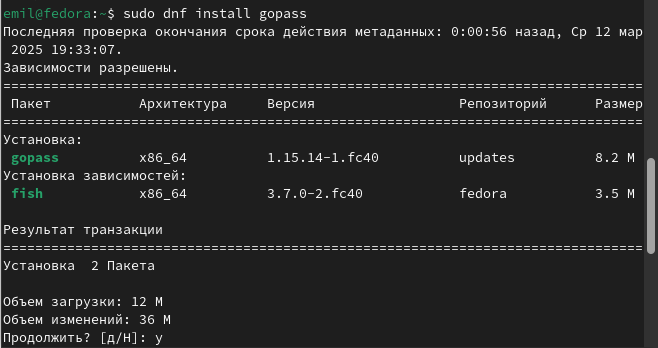

Цель работы
Познакомиться с pass, gopass, native messaging, chezmoi. Научиться
пользоваться этими утилитами, синхронизировать их с гит.
Задание
- Установить дополнительное ПО
- Установить и настроить pass
- Настроить интерфейс с браузером
- Сохранить пароль
- Установить и настроить chezmoi
- Настроить chezmoi на новой машине
- Выполнить ежедневные операции с chezmoi
Устанавливаем pass и gopass
Установка

Установка
Просмотрим
список ключей. Инициализируем хранилище. Синхронизируемс git Создадим
структуру git.
список ключей
список ключей
инициализация
Для
синхронизации выполняется следующая команда: pass git pull pass git
push
синхронизация
синхронизация
Для
взаимодействия с броузером используем интерфейс native messaging.
установка
установка
Добавим
новый пароль. Отобразим пароль для указанного имени файла. Заменим
существующий пароль
добавление пароля
добавление пароля
Установим
дополнительное программное обеспечение. Установим шрифты.
установка
установка
Установим
бинарный файл. Создадим собственный репозиторий с помощью утилит
установка
установка
На
второй машине инициализируем chezmoi с репозиторием dotfiles. Проверим,
какие изменения внесёт chezmoi в домашний каталог.
инициализация
добавим
в файл конфигурации ~/.config/chezmoi/chezmoi.toml следущие строки
инициализация
Вывод
Мы познакомились с pass, gopass, native messaging, chezmoi. Научились
пользоваться этими утилитами, синхронизировали их с гит.